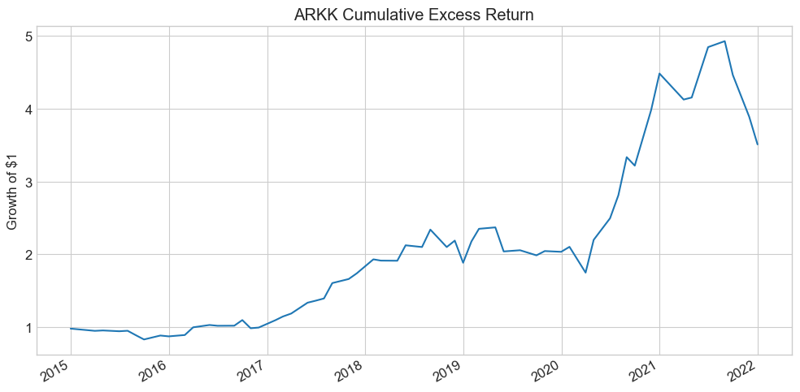
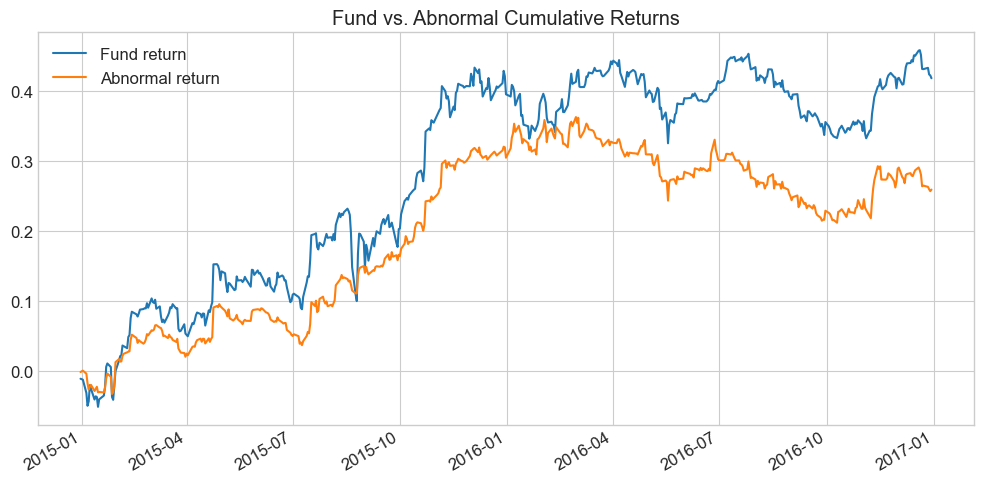
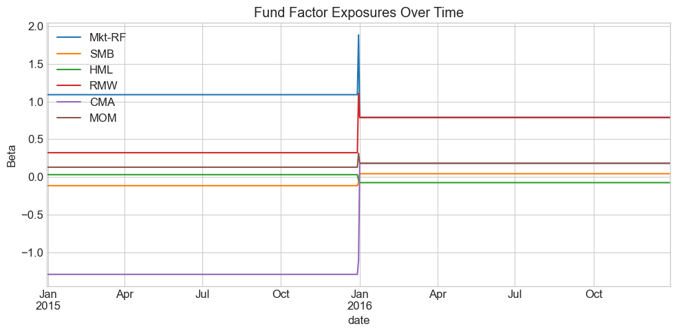

27.6. 📘 Multi-Factor Models#
27.6.1. 🎯 Learning Objectives#
By the end of this notebook, you will be able to:
Understand why investors move beyond CAPM — Articulate the limitations of a single-market factor
Estimate multi-factor models — Regress asset/fund returns on factor portfolios; interpret loadings, alphas, and \(R^2\)
Evaluate fund performance — Distinguish genuine alpha from factor exposure using factor regressions
Decompose portfolio risk — Use both top-down and bottom-up approaches to separate systematic from idiosyncratic components
Estimate factor premia — Run Fama–MacBeth cross-sectional regressions and interpret characteristic-based risk prices
Construct characteristic-adjusted returns — Separate skill from style for any portfolio
27.6.2. 📋 Table of Contents#
27.6.3. 🛠️ Setup#
#@title 🛠️ Setup: Run this cell first (click to expand)
#!pip install wrds
import wrds
import numpy as np
import pandas as pd
%matplotlib inline
import matplotlib.pyplot as plt
import statsmodels.api as sm
import pandas_datareader.data as web
plt.style.use('seaborn-v0_8-whitegrid')
plt.rcParams['figure.figsize'] = [10, 6]
plt.rcParams['font.size'] = 12
import warnings
warnings.filterwarnings('ignore')
def get_factors(factors='CAPM', freq='daily'):
if freq == 'monthly':
freq_label = ''
else:
freq_label = '_' + freq
if factors == 'CAPM':
fama_french = web.DataReader("F-F_Research_Data_Factors" + freq_label, "famafrench", start="1921-01-01")
df_factor = fama_french[0][['RF', 'Mkt-RF']]
elif factors == 'FF3':
fama_french = web.DataReader("F-F_Research_Data_Factors" + freq_label, "famafrench", start="1921-01-01")
df_factor = fama_french[0][['RF', 'Mkt-RF', 'SMB', 'HML']]
elif factors == 'FF5':
fama_french = web.DataReader("F-F_Research_Data_Factors" + freq_label, "famafrench", start="1921-01-01")
df_factor = fama_french[0][['RF', 'Mkt-RF', 'SMB', 'HML']]
fama_french2 = web.DataReader("F-F_Research_Data_5_Factors_2x3" + freq_label, "famafrench", start="1921-01-01")
df_factor = df_factor.merge(fama_french2[0][['RMW', 'CMA']], on='Date', how='outer')
else:
fama_french = web.DataReader("F-F_Research_Data_Factors" + freq_label, "famafrench", start="1921-01-01")
df_factor = fama_french[0][['RF', 'Mkt-RF', 'SMB', 'HML']]
fama_french2 = web.DataReader("F-F_Research_Data_5_Factors_2x3" + freq_label, "famafrench", start="1921-01-01")
df_factor = df_factor.merge(fama_french2[0][['RMW', 'CMA']], on='Date', how='outer')
fama_french3 = web.DataReader("F-F_Momentum_Factor" + freq_label, "famafrench", start="1921-01-01")
df_factor = df_factor.merge(fama_french3[0], on='Date')
df_factor.columns = ['RF', 'Mkt-RF', 'SMB', 'HML', 'RMW', 'CMA', 'MOM']
if freq == 'monthly':
df_factor.index = pd.to_datetime(df_factor.index.to_timestamp())
else:
df_factor.index = pd.to_datetime(df_factor.index)
return df_factor / 100
def get_daily_wrds_multiple_ticker(tickers, conn):
permnos = conn.get_table(library='crsp', table='stocknames',
columns=['permno', 'ticker', 'namedt', 'nameenddt'])
permnos['nameenddt'] = pd.to_datetime(permnos['nameenddt'])
permnos = permnos[(permnos['ticker'].isin(tickers)) &
(permnos['nameenddt'] == permnos['nameenddt'].max())]
permno_list = permnos['permno'].unique().tolist()
print(f"Found PERMNOs: {permno_list}")
query = f"""
SELECT permno, date, ret, retx, prc
FROM crsp.dsf
WHERE permno IN ({','.join(map(str, permno_list))})
ORDER BY date
"""
daily_returns = conn.raw_sql(query, date_cols=['date'])
daily_returns = daily_returns.merge(permnos[['permno', 'ticker']], on='permno', how='left')
daily_returns = daily_returns.pivot(index='date', columns='ticker', values='ret')
daily_returns = daily_returns[tickers]
return daily_returns
def get_permnos(tickers, conn):
permnos = conn.get_table(library='crsp', table='stocknames',
columns=['permno', 'ticker', 'namedt', 'nameenddt'])
permnos['nameenddt'] = pd.to_datetime(permnos['nameenddt'])
permnos = permnos[permnos['ticker'].isin(tickers)]
return permnos
27.6.4. Why Multi-Factor Models? #
So far we have focused on the market as our single factor. In practice, it is standard to use models with many factors. Additional factors:
Soak up risk — making measures of alpha more precise
Difference out other sources of expected excess returns that are easy to access
Allow for better risk management across multiple dimensions
We extend the single-factor model by adding more regressors. With \(m\) factors:
In matrix notation, stacking all \(n\) assets:
where \(B\) is \(n \times m\) (each row = one asset’s exposures), \(F_t\) is \(m \times 1\) (factor returns), and \(U_t\) is the vector of idiosyncratic residuals.
27.6.4.1. “Endogenous” Benchmarking#
Large allocators often set benchmarks for managers. The most common is the S&P 500 (≈ market return), but you can also construct endogenous benchmarks:
Use the multi-factor combination that best replicates the portfolio as the benchmark. This is typically done implicitly: you allocate to funds based on their alpha (hard to get) rather than their beta exposure (cheap to replicate).
💡 Key Insight:
Alpha is scarce; beta is plentiful. You should pay different prices for each. The gains from beta are in implementation (low cost); the gains from alpha are in selection (finding skill).
27.6.5. Estimating Multi-Factor Models: The Time-Series Approach #
We start with known factors and estimate betas using time-series regressions. This works especially well when factors are excess returns themselves.
For each asset, regress its excess returns on the factor excess returns:
27.6.5.1. Application: What Do Momentum ETFs Actually Deliver?#
We’ll take the largest ETFs claiming to implement momentum and see what factor exposures they actually have.
tickers = ["MTUM", "SPMO", "XMMO", "IMTM", "XSMO", "PDP", "JMOM", "DWAS", "VFMO", "XSVM", "QMOM"]
conn = wrds.Connection()
# Get daily returns and factor data
df_ETF = get_daily_wrds_multiple_ticker(tickers, conn)
df_factor = get_factors('FF6', 'daily')
# Align and compute excess returns
df_ETF, df_factor = df_ETF.align(df_factor, join='inner', axis=0)
df_ETF = df_ETF.subtract(df_factor['RF'], axis=0)
Loading library list...
Done
Found PERMNOs: [13512, 13851, 15161, 15725, 17085, 17392, 17622, 90621, 90622, 90623, 91876]
# Example: full regression for QMOM
X = sm.add_constant(df_factor.drop(columns=['RF']))
y = df_ETF["QMOM"].dropna()
X = X.loc[y.index]
model = sm.OLS(y, X).fit()
print(model.summary())
OLS Regression Results
==============================================================================
Dep. Variable: QMOM R-squared: 0.762
Model: OLS Adj. R-squared: 0.762
Method: Least Squares F-statistic: 1217.
Date: Mon, 13 Apr 2026 Prob (F-statistic): 0.00
Time: 15:15:29 Log-Likelihood: 7764.5
No. Observations: 2284 AIC: -1.552e+04
Df Residuals: 2277 BIC: -1.547e+04
Df Model: 6
Covariance Type: nonrobust
==============================================================================
coef std err t P>|t| [0.025 0.975]
------------------------------------------------------------------------------
const 2.253e-05 0.000 0.133 0.894 -0.000 0.000
Mkt-RF 1.0687 0.016 68.221 0.000 1.038 1.099
SMB 0.4718 0.029 16.195 0.000 0.415 0.529
HML 0.1421 0.025 5.581 0.000 0.092 0.192
RMW -0.3528 0.037 -9.491 0.000 -0.426 -0.280
CMA -0.1667 0.046 -3.618 0.000 -0.257 -0.076
MOM 0.5716 0.017 33.695 0.000 0.538 0.605
==============================================================================
Omnibus: 197.078 Durbin-Watson: 2.333
Prob(Omnibus): 0.000 Jarque-Bera (JB): 1242.962
Skew: 0.005 Prob(JB): 1.24e-270
Kurtosis: 6.614 Cond. No. 292.
==============================================================================
Notes:
[1] Standard Errors assume that the covariance matrix of the errors is correctly specified.
# Run the regression for all momentum ETFs
Results = pd.DataFrame([], index=tickers, columns=X.columns)
for ticker in tickers:
y = df_ETF[ticker]
X = sm.add_constant(df_factor.drop(columns=['RF']))
X = X[y.isna() == False]
y = y[y.isna() == False]
model = sm.OLS(y, X).fit()
Results.loc[ticker, :] = model.params
Results.at[ticker, 't_alpha'] = model.tvalues['const']
Results.at[ticker, 'ivol'] = model.resid.std() * 252**0.5
Results.at[ticker, 'Sample size'] = y.shape[0] / 252
Results['const'] = Results['const'].astype(float) * 252
Results.rename(columns={'const': 'alpha'}, inplace=True)
Results = Results[['alpha', 't_alpha', 'Mkt-RF', 'SMB', 'HML', 'RMW', 'CMA', 'MOM', 'ivol', 'Sample size']]
Results
| alpha | t_alpha | Mkt-RF | SMB | HML | RMW | CMA | MOM | ivol | Sample size | |
|---|---|---|---|---|---|---|---|---|---|---|
| MTUM | -0.007184 | -0.441952 | 1.024871 | -0.105213 | -0.057124 | -0.127846 | -0.027354 | 0.325909 | 0.055400 | 11.690476 |
| SPMO | 0.018246 | 0.776076 | 1.013657 | -0.158928 | -0.049394 | -0.02647 | 0.076656 | 0.25509 | 0.071106 | 9.210317 |
| XMMO | 0.009431 | 0.496884 | 1.040259 | 0.337397 | 0.041132 | 0.030845 | -0.105733 | 0.199555 | 0.084279 | 19.805556 |
| IMTM | -0.033974 | -1.061349 | 0.802455 | -0.013844 | 0.057041 | -0.133071 | 0.12565 | 0.118228 | 0.100624 | 9.944444 |
| XSMO | -0.012768 | -0.639363 | 0.984281 | 0.860455 | 0.191119 | 0.100718 | -0.09243 | 0.165786 | 0.088671 | 19.805556 |
| PDP | -0.015862 | -1.055797 | 1.054885 | 0.142881 | -0.00835 | -0.083504 | -0.184164 | 0.252145 | 0.063254 | 17.817460 |
| JMOM | 0.004130 | 0.203645 | 0.963249 | 0.012772 | -0.06464 | -0.07863 | -0.066677 | 0.105358 | 0.053914 | 7.123016 |
| DWAS | -0.010285 | -0.495609 | 1.088441 | 1.075939 | 0.23163 | -0.226312 | -0.078938 | 0.400114 | 0.072943 | 12.428571 |
| VFMO | 0.011316 | 0.563876 | 1.03016 | 0.449136 | 0.185386 | -0.221027 | -0.061281 | 0.396359 | 0.052364 | 6.861111 |
| XSVM | -0.004102 | -0.220702 | 0.932729 | 0.983862 | 0.528043 | 0.329306 | 0.194897 | -0.056401 | 0.082522 | 19.805556 |
| QMOM | 0.005677 | 0.132772 | 1.068744 | 0.471783 | 0.142069 | -0.352846 | -0.166669 | 0.571551 | 0.128281 | 9.063492 |
🤔 Think and Code:
Which fund is “better”? Is it all about alpha in this case?
What other things should you look at beyond the alpha column?
Is this table providing a fair comparison, given different sample sizes?
27.6.6. Performance Attribution: Cathie Wood #
Factor models let us decompose a manager’s strategy: what explains their returns? What tilts do they have? What kind of stocks do they like?
27.6.6.1. Application: What Does Cathie Wood Like?#
Cathie Wood is the founder of ARK Invest (~$60B AUM), investing in disruptive technologies — self-driving cars, genomics, AI. She gained fame for spectacular returns and unconventional stock picks.
df = pd.read_pickle('https://raw.githubusercontent.com/amoreira2/Fin418/main/assets/data/df_WarrenBAndCathieW_monthly.pkl')
_temp = df.drop(['BRK'], axis=1).dropna()
Factors = _temp.drop(['RF', 'ARKK'], axis=1)
ArK = _temp.ARKK - _temp.RF
(ArK + 1).cumprod().plot(title='ARKK Cumulative Excess Return', figsize=(10, 5))
plt.ylabel('Growth of $1')
plt.tight_layout()
plt.show()
print(f"Annualized mean excess return: {ArK.mean()*252:.1%}")

Annualized mean excess return: 644.7%
The Fama-French factors capture different investment styles:
Factor |
Strategy |
|---|---|
HML |
Buy high book-to-market (value), sell low (growth) |
SMB |
Buy small caps, sell large caps |
RMW |
Buy high profitability, sell low profitability |
CMA |
Buy low investment (conservative), sell high investment (aggressive) |
MOM |
Buy recent winners, sell recent losers |
For now, think of these as important trading strategies that practitioners know well. We’ll discuss their economics in detail later.
# Multi-factor regression (annualized)
x = sm.add_constant(Factors * 252)
y = ArK * 252
results = sm.OLS(y, x).fit()
results.summary()
| Dep. Variable: | y | R-squared: | 0.838 |
|---|---|---|---|
| Model: | OLS | Adj. R-squared: | 0.820 |
| Method: | Least Squares | F-statistic: | 44.90 |
| Date: | Mon, 13 Apr 2026 | Prob (F-statistic): | 7.32e-19 |
| Time: | 15:15:29 | Log-Likelihood: | -215.14 |
| No. Observations: | 59 | AIC: | 444.3 |
| Df Residuals: | 52 | BIC: | 458.8 |
| Df Model: | 6 | ||
| Covariance Type: | nonrobust |
| coef | std err | t | P>|t| | [0.025 | 0.975] | |
|---|---|---|---|---|---|---|
| const | 1.7109 | 1.396 | 1.225 | 0.226 | -1.091 | 4.513 |
| Mkt-RF | 1.5432 | 0.155 | 9.931 | 0.000 | 1.231 | 1.855 |
| SMB | 0.3449 | 0.249 | 1.387 | 0.171 | -0.154 | 0.844 |
| HML | -0.9504 | 0.204 | -4.667 | 0.000 | -1.359 | -0.542 |
| RMW | -0.8065 | 0.306 | -2.636 | 0.011 | -1.420 | -0.193 |
| CMA | -0.5312 | 0.379 | -1.403 | 0.167 | -1.291 | 0.229 |
| Mom | -0.2441 | 0.176 | -1.390 | 0.170 | -0.596 | 0.108 |
| Omnibus: | 11.073 | Durbin-Watson: | 1.753 |
|---|---|---|---|
| Prob(Omnibus): | 0.004 | Jarque-Bera (JB): | 11.234 |
| Skew: | 0.896 | Prob(JB): | 0.00364 |
| Kurtosis: | 4.165 | Cond. No. | 16.1 |
Notes:
[1] Standard Errors assume that the covariance matrix of the errors is correctly specified.
🤔 Think and Code:
How much of ARKK’s return behavior can we explain with factors?
What kind of stocks does Cathie Wood like? (Look at the factor loadings)
How much portfolio variance comes from market exposure alone vs. being anti-value?
What would the volatility of the hedged (residual) portfolio be?
When did she earn her alpha? Is it smooth or concentrated in a few periods?
27.6.7. Warren Buffett: Does He Beat the Market? #

Warren Buffett is the chairman and CEO of Berkshire Hathaway. His top holdings include Apple, Bank of America, Chevron, Coca-Cola, and American Express. He’s known for a long-term, value-oriented approach — large, blue-chip companies with strong balance sheets and attractive valuations.
Let’s apply the same factor regression framework to Berkshire Hathaway.
# Single-factor CAPM regression
BrK = df.BRK - df.RF
x = sm.add_constant(df['Mkt-RF'])
results = sm.OLS(BrK, x).fit()
results.summary()
| Dep. Variable: | y | R-squared: | 0.223 |
|---|---|---|---|
| Model: | OLS | Adj. R-squared: | 0.220 |
| Method: | Least Squares | F-statistic: | 79.32 |
| Date: | Mon, 13 Apr 2026 | Prob (F-statistic): | 7.17e-17 |
| Time: | 15:15:29 | Log-Likelihood: | 442.23 |
| No. Observations: | 279 | AIC: | -880.5 |
| Df Residuals: | 277 | BIC: | -873.2 |
| Df Model: | 1 | ||
| Covariance Type: | nonrobust |
| coef | std err | t | P>|t| | [0.025 | 0.975] | |
|---|---|---|---|---|---|---|
| const | 0.0054 | 0.003 | 1.797 | 0.073 | -0.001 | 0.011 |
| Mkt-RF | 0.5919 | 0.066 | 8.906 | 0.000 | 0.461 | 0.723 |
| Omnibus: | 51.668 | Durbin-Watson: | 1.989 |
|---|---|---|---|
| Prob(Omnibus): | 0.000 | Jarque-Bera (JB): | 198.575 |
| Skew: | 0.710 | Prob(JB): | 7.59e-44 |
| Kurtosis: | 6.882 | Cond. No. | 22.3 |
Notes:
[1] Standard Errors assume that the covariance matrix of the errors is correctly specified.
What do we learn? Is the alpha large economically? Statistically?
How should we think about this alpha?
Now let’s use the full multi-factor model:
# Multi-factor regression: FF5 + Momentum
Factors = df.drop(['BRK', 'RF', 'ARKK'], axis=1)
x = sm.add_constant(Factors)
y = df.BRK - df.RF
results = sm.OLS(y, x).fit()
results.summary()
| Dep. Variable: | y | R-squared: | 0.405 |
|---|---|---|---|
| Model: | OLS | Adj. R-squared: | 0.392 |
| Method: | Least Squares | F-statistic: | 30.81 |
| Date: | Mon, 13 Apr 2026 | Prob (F-statistic): | 3.71e-28 |
| Time: | 15:15:29 | Log-Likelihood: | 479.45 |
| No. Observations: | 279 | AIC: | -944.9 |
| Df Residuals: | 272 | BIC: | -919.5 |
| Df Model: | 6 | ||
| Covariance Type: | nonrobust |
| coef | std err | t | P>|t| | [0.025 | 0.975] | |
|---|---|---|---|---|---|---|
| const | 0.0037 | 0.003 | 1.307 | 0.192 | -0.002 | 0.009 |
| Mkt-RF | 0.6938 | 0.070 | 9.907 | 0.000 | 0.556 | 0.832 |
| SMB | -0.3087 | 0.097 | -3.193 | 0.002 | -0.499 | -0.118 |
| HML | 0.5732 | 0.130 | 4.398 | 0.000 | 0.317 | 0.830 |
| RMW | 0.3486 | 0.123 | 2.827 | 0.005 | 0.106 | 0.591 |
| CMA | -0.4156 | 0.191 | -2.171 | 0.031 | -0.792 | -0.039 |
| Mom | -0.0152 | 0.059 | -0.255 | 0.799 | -0.132 | 0.102 |
| Omnibus: | 34.823 | Durbin-Watson: | 1.948 |
|---|---|---|---|
| Prob(Omnibus): | 0.000 | Jarque-Bera (JB): | 71.498 |
| Skew: | 0.647 | Prob(JB): | 2.98e-16 |
| Kurtosis: | 5.116 | Cond. No. | 82.1 |
Notes:
[1] Standard Errors assume that the covariance matrix of the errors is correctly specified.
🤔 Think and Code:
Did adding factors change the alpha? By how much?
What kind of stocks does Warren like? (Look at the factor loadings)
What does this tell us about his investment style vs. his stock-picking skill?
How does his profile compare to Cathie Wood’s?
27.6.8. Bottom-Up vs Top-Down Decomposition #
So far we estimated fund factor exposures by looking at how the fund’s returns co-move with factors (top-down). An alternative: look through the fund at individual holdings (bottom-up).
If a portfolio with weights \(X\) earns excess returns \(r = X'R\), and each asset satisfies:
then the portfolio satisfies:
So the portfolio’s exposure to factor \(j\) is the dollar-weighted average of the asset betas:
💡 Key Insight:
For high-turnover portfolios, the bottom-up approach tracks exposures much better because it refreshes at the holding level. For stable portfolios, top-down regressions are simpler and avoid the noise of estimating individual-stock betas.
27.6.8.1. Sample Portfolio: Tech → Retail Rotation#
import pandas as pd
date1, date2, date3 = '2014-12-31', '2015-12-31', '2016-12-31'
# Portfolio 1: Tech (2014-2015)
portfolio_data1 = {
'date': [date1]*5,
'ticker': ['AAPL', 'GOOGL', 'MSFT', 'NVDA', 'AMZN'],
'weight': [0.2, 0.2, 0.2, 0.2, 0.2]
}
# Portfolio 2: Retail (2015-2016)
portfolio_data2 = {
'date': [date2]*4,
'ticker': ['COST', 'WMT', 'TGT', 'KR'],
'weight': [0.25, 0.25, 0.25, 0.25]
}
portfolio_df1 = pd.DataFrame(portfolio_data1)
portfolio_df2 = pd.DataFrame(portfolio_data2)
# Expand to daily holdings
date_range1 = pd.date_range(start=date1, end=date2, freq='B')
date_range2 = pd.date_range(start=date2, end=date3, freq='B')
monthly_portfolio1 = pd.DataFrame(
[(d, t, w) for d in date_range1 for t, w in zip(portfolio_df1['ticker'], portfolio_df1['weight'])],
columns=['date', 'ticker', 'weight'])
monthly_portfolio2 = pd.DataFrame(
[(d, t, w) for d in date_range2 for t, w in zip(portfolio_df2['ticker'], portfolio_df2['weight'])],
columns=['date', 'ticker', 'weight'])
final_portfolio_df = pd.concat([monthly_portfolio1, monthly_portfolio2], ignore_index=True)
final_portfolio_df
| date | ticker | weight | |
|---|---|---|---|
| 0 | 2014-12-31 | AAPL | 0.20 |
| 1 | 2014-12-31 | GOOGL | 0.20 |
| 2 | 2014-12-31 | MSFT | 0.20 |
| 3 | 2014-12-31 | NVDA | 0.20 |
| 4 | 2014-12-31 | AMZN | 0.20 |
| ... | ... | ... | ... |
| 2353 | 2016-12-29 | KR | 0.25 |
| 2354 | 2016-12-30 | COST | 0.25 |
| 2355 | 2016-12-30 | WMT | 0.25 |
| 2356 | 2016-12-30 | TGT | 0.25 |
| 2357 | 2016-12-30 | KR | 0.25 |
2358 rows × 3 columns
# Get stock returns and factors
tickers = final_portfolio_df.ticker.unique().tolist()
df_stocks = get_daily_wrds_multiple_ticker(tickers, conn)
df_factor = get_factors('FF6', 'daily').dropna()
df_stocks = df_stocks.subtract(df_factor['RF'], axis=0)
Found PERMNOs: [10107, 14593, 16678, 49154, 55976, 84788, 86580, 87055, 90319]
# Merge portfolio weights with stock returns
df_merged = df_stocks.stack()
df_merged.name = 'eret'
df_merged = final_portfolio_df.merge(df_merged, left_on=['date', 'ticker'], right_index=True, how='left')
df_merged.head()
| date | ticker | weight | eret | |
|---|---|---|---|---|
| 0 | 2014-12-31 | AAPL | 0.2 | -0.019019 |
| 1 | 2014-12-31 | GOOGL | 0.2 | -0.008631 |
| 2 | 2014-12-31 | MSFT | 0.2 | -0.012123 |
| 3 | 2014-12-31 | NVDA | 0.2 | -0.01571 |
| 4 | 2014-12-31 | AMZN | 0.2 | 0.000161 |
27.6.8.2. Top-Down Approach#
Construct the portfolio return first, then run the multi-factor regression:
fund_return = df_merged.groupby('date').apply(lambda x: (x['eret'] * x['weight']).sum())
df_factor, fund_return = df_factor.align(fund_return, join='inner', axis=0)
# Full-sample regression
y = fund_return.dropna()
X = sm.add_constant(df_factor.drop(columns=['RF']).loc[y.index])
model = sm.OLS(y, X).fit()
model.summary()
| Dep. Variable: | y | R-squared: | 0.539 |
|---|---|---|---|
| Model: | OLS | Adj. R-squared: | 0.533 |
| Method: | Least Squares | F-statistic: | 97.05 |
| Date: | Mon, 13 Apr 2026 | Prob (F-statistic): | 1.66e-80 |
| Time: | 15:15:34 | Log-Likelihood: | 1715.3 |
| No. Observations: | 505 | AIC: | -3417. |
| Df Residuals: | 498 | BIC: | -3387. |
| Df Model: | 6 | ||
| Covariance Type: | nonrobust |
| coef | std err | t | P>|t| | [0.025 | 0.975] | |
|---|---|---|---|---|---|---|
| const | 0.0005 | 0.000 | 1.408 | 0.160 | -0.000 | 0.001 |
| Mkt-RF | 0.9482 | 0.044 | 21.464 | 0.000 | 0.861 | 1.035 |
| SMB | -0.1250 | 0.080 | -1.573 | 0.116 | -0.281 | 0.031 |
| HML | 0.0096 | 0.101 | 0.096 | 0.924 | -0.188 | 0.207 |
| RMW | 0.7211 | 0.117 | 6.160 | 0.000 | 0.491 | 0.951 |
| CMA | -0.5525 | 0.147 | -3.770 | 0.000 | -0.840 | -0.265 |
| MOM | 0.1502 | 0.050 | 3.008 | 0.003 | 0.052 | 0.248 |
| Omnibus: | 94.691 | Durbin-Watson: | 1.942 |
|---|---|---|---|
| Prob(Omnibus): | 0.000 | Jarque-Bera (JB): | 342.514 |
| Skew: | 0.819 | Prob(JB): | 4.21e-75 |
| Kurtosis: | 6.687 | Cond. No. | 461. |
Notes:
[1] Standard Errors assume that the covariance matrix of the errors is correctly specified.
Now suppose you know the portfolio changed at end-2015. You can break the regression into two windows — but what do you lose in precision?
# Period 1: tech portfolio (2014-2015)
y1 = fund_return[:'2015-12-31'].dropna()
X1 = sm.add_constant(df_factor.drop(columns=['RF']).loc[y1.index])
model1 = sm.OLS(y1, X1).fit()
display(model1.summary())
# Period 2: retail portfolio (2016)
y2 = fund_return['2015-12-31':].dropna()
X2 = sm.add_constant(df_factor.drop(columns=['RF']).loc[y2.index])
model2 = sm.OLS(y2, X2).fit()
model2.summary()
| Dep. Variable: | y | R-squared: | 0.771 |
|---|---|---|---|
| Model: | OLS | Adj. R-squared: | 0.765 |
| Method: | Least Squares | F-statistic: | 137.9 |
| Date: | Mon, 13 Apr 2026 | Prob (F-statistic): | 9.55e-76 |
| Time: | 15:15:34 | Log-Likelihood: | 907.78 |
| No. Observations: | 253 | AIC: | -1802. |
| Df Residuals: | 246 | BIC: | -1777. |
| Df Model: | 6 | ||
| Covariance Type: | nonrobust |
| coef | std err | t | P>|t| | [0.025 | 0.975] | |
|---|---|---|---|---|---|---|
| const | 0.0009 | 0.000 | 1.995 | 0.047 | 1.08e-05 | 0.002 |
| Mkt-RF | 1.0123 | 0.048 | 21.135 | 0.000 | 0.918 | 1.107 |
| SMB | -0.2453 | 0.101 | -2.439 | 0.015 | -0.443 | -0.047 |
| HML | 0.2501 | 0.135 | 1.859 | 0.064 | -0.015 | 0.515 |
| RMW | 0.7186 | 0.170 | 4.231 | 0.000 | 0.384 | 1.053 |
| CMA | -2.0396 | 0.214 | -9.511 | 0.000 | -2.462 | -1.617 |
| MOM | -0.0418 | 0.063 | -0.659 | 0.511 | -0.167 | 0.083 |
| Omnibus: | 86.620 | Durbin-Watson: | 1.814 |
|---|---|---|---|
| Prob(Omnibus): | 0.000 | Jarque-Bera (JB): | 377.103 |
| Skew: | 1.336 | Prob(JB): | 1.30e-82 |
| Kurtosis: | 8.351 | Cond. No. | 568. |
Notes:
[1] Standard Errors assume that the covariance matrix of the errors is correctly specified.
| Dep. Variable: | y | R-squared: | 0.335 |
|---|---|---|---|
| Model: | OLS | Adj. R-squared: | 0.319 |
| Method: | Least Squares | F-statistic: | 20.63 |
| Date: | Mon, 13 Apr 2026 | Prob (F-statistic): | 1.51e-19 |
| Time: | 15:15:34 | Log-Likelihood: | 870.23 |
| No. Observations: | 253 | AIC: | -1726. |
| Df Residuals: | 246 | BIC: | -1702. |
| Df Model: | 6 | ||
| Covariance Type: | nonrobust |
| coef | std err | t | P>|t| | [0.025 | 0.975] | |
|---|---|---|---|---|---|---|
| const | -0.0004 | 0.001 | -0.705 | 0.481 | -0.001 | 0.001 |
| Mkt-RF | 0.7193 | 0.070 | 10.242 | 0.000 | 0.581 | 0.858 |
| SMB | 0.1228 | 0.108 | 1.135 | 0.258 | -0.090 | 0.336 |
| HML | -0.0331 | 0.125 | -0.265 | 0.791 | -0.279 | 0.213 |
| RMW | 0.7591 | 0.144 | 5.289 | 0.000 | 0.476 | 1.042 |
| CMA | 0.0837 | 0.175 | 0.479 | 0.633 | -0.261 | 0.428 |
| MOM | 0.1594 | 0.069 | 2.314 | 0.022 | 0.024 | 0.295 |
| Omnibus: | 8.063 | Durbin-Watson: | 2.104 |
|---|---|---|---|
| Prob(Omnibus): | 0.018 | Jarque-Bera (JB): | 13.473 |
| Skew: | -0.109 | Prob(JB): | 0.00119 |
| Kurtosis: | 4.109 | Cond. No. | 408. |
Notes:
[1] Standard Errors assume that the covariance matrix of the errors is correctly specified.
27.6.8.3. Strategy Abnormal Returns#
Armed with betas, we construct abnormal returns by stripping out factor-explained performance:
abnormal_return = fund_return - df_factor.drop(columns=['RF']) @ model.params[1:]
fig, ax = plt.subplots(figsize=(10, 5))
fund_return.cumsum().plot(ax=ax, label='Fund return')
abnormal_return.cumsum().plot(ax=ax, label='Abnormal return')
ax.set_title('Fund vs. Abnormal Cumulative Returns')
ax.legend()
plt.tight_layout()
plt.show()

🤔 Think and Code:
How can you compute abnormal returns more easily from regression outputs? Hint: which regression statistic equals the average abnormal return?
What does the pattern of abnormal returns tell you about the fund’s skill?
27.6.8.4. Bottom-Up Approach#
Now we estimate factor betas for each stock, then use portfolio weights to compute fund exposures date-by-date:
# Estimate factor betas for each stock
df_factor, df_stocks = df_factor.align(df_stocks, join='inner', axis=0)
Xf = df_factor.drop(columns=['RF'])
B = pd.DataFrame([], index=tickers, columns=Xf.columns)
for ticker in df_stocks.columns:
y = df_stocks[ticker].dropna()
X = sm.add_constant(Xf.loc[y.index])
model = sm.OLS(y, X).fit()
B.loc[ticker, :] = model.params[1:]
B
| Mkt-RF | SMB | HML | RMW | CMA | MOM | |
|---|---|---|---|---|---|---|
| AAPL | 1.023921 | -0.099693 | 0.098624 | 0.821751 | -1.516863 | -0.029002 |
| GOOGL | 0.944916 | -0.445416 | -0.053068 | -0.052756 | -1.334679 | 0.161329 |
| MSFT | 1.227477 | -0.309171 | 0.164822 | 0.690796 | -1.156395 | 0.097671 |
| NVDA | 1.269493 | 0.688041 | -0.293219 | 0.298152 | -0.264944 | 0.168911 |
| AMZN | 0.986571 | -0.399886 | 0.24572 | -0.143481 | -2.160607 | 0.257187 |
| COST | 0.788138 | -0.030709 | 0.042829 | 0.740032 | -0.038182 | 0.210871 |
| WMT | 0.777156 | -0.142485 | -0.255371 | 0.858924 | 0.442454 | 0.105975 |
| TGT | 0.862613 | 0.297714 | -0.103554 | 1.250017 | 0.49437 | 0.102883 |
| KR | 0.734953 | 0.055092 | 0.023944 | 0.298958 | -0.165853 | 0.313963 |
With individual betas in hand, we can compute fund-level exposures date by date using current portfolio weights. This matters a lot for funds that trade frequently:
_temp = final_portfolio_df.merge(B, left_on='ticker', right_index=True, how='left')
Fund_B = _temp.groupby('date').apply(
lambda x: pd.Series((x[Xf.columns].values * x['weight'].values.reshape(-1, 1)).sum(axis=0), index=Xf.columns))
Fund_B.plot(title='Fund Factor Exposures Over Time', figsize=(10, 5))
plt.ylabel('Beta')
plt.tight_layout()
plt.show()
Fund_B

| Mkt-RF | SMB | HML | RMW | CMA | MOM | |
|---|---|---|---|---|---|---|
| date | ||||||
| 2014-12-31 | 1.090475 | -0.113225 | 0.032576 | 0.322892 | -1.286698 | 0.131219 |
| 2015-01-01 | 1.090475 | -0.113225 | 0.032576 | 0.322892 | -1.286698 | 0.131219 |
| 2015-01-02 | 1.090475 | -0.113225 | 0.032576 | 0.322892 | -1.286698 | 0.131219 |
| 2015-01-05 | 1.090475 | -0.113225 | 0.032576 | 0.322892 | -1.286698 | 0.131219 |
| 2015-01-06 | 1.090475 | -0.113225 | 0.032576 | 0.322892 | -1.286698 | 0.131219 |
| ... | ... | ... | ... | ... | ... | ... |
| 2016-12-26 | 0.790715 | 0.044903 | -0.073038 | 0.786983 | 0.183197 | 0.183423 |
| 2016-12-27 | 0.790715 | 0.044903 | -0.073038 | 0.786983 | 0.183197 | 0.183423 |
| 2016-12-28 | 0.790715 | 0.044903 | -0.073038 | 0.786983 | 0.183197 | 0.183423 |
| 2016-12-29 | 0.790715 | 0.044903 | -0.073038 | 0.786983 | 0.183197 | 0.183423 |
| 2016-12-30 | 0.790715 | 0.044903 | -0.073038 | 0.786983 | 0.183197 | 0.183423 |
523 rows × 6 columns
📌 Remember:
There is no reason to believe asset betas are stable over time. The general recipe:
Daily data: 1–2 year estimation windows
Monthly data: ~5 year windows
Long samples give precision if betas are constant; short samples capture time-variation.
27.6.9. The Cross-Sectional Approach #
In the time-series approach, we start from factors and estimate betas. Now we flip this: start from characteristics (which are the betas) and estimate the returns associated with each characteristic.
27.6.9.1. Time-Series vs. Cross-Sectional#
Time-Series |
Cross-Sectional |
|
|---|---|---|
Starts from |
Factor returns |
Asset characteristics |
Estimates |
Betas (loadings) |
Factor premia (returns to characteristics) |
Requires |
Traded factors |
Large cross-section of stocks |
Best for |
Small number of well-defined factors |
Many characteristics simultaneously |
27.6.9.2. The Recipe#
Get excess returns \(R\) for all stocks at date \(t\)
Get characteristics \(X\) for those stocks as of date \(t-1\) (to avoid look-ahead bias!)
Normalize characteristics cross-sectionally (z-scores)
Run the cross-sectional regression: \(R = X \beta + \epsilon\)
From OLS: \(\beta = (X'X)^{-1}X'R\)
💡 Key Insight:
The \(\beta\) coefficients are excess returns themselves — they are returns on “pure play” portfolios designed to have a loading of 1 on one characteristic and zero on all others. The weights \((X'X)^{-1}X'\) are the portfolio weights.
# Load characteristics data
url = "https://github.com/amoreira2/Fin418/blob/main/assets/data/characteristics_raw.pkl?raw=true"
df_X = pd.read_pickle(url)
# Shift dates to end-of-month basis
df_X.set_index(['date', 'permno'], inplace=True)
df_X.head()
| re | rf | rme | size | value | prof | fscore | debtiss | repurch | nissa | ... | momrev | valuem | nissm | strev | ivol | betaarb | indrrev | price | age | shvol | ||
|---|---|---|---|---|---|---|---|---|---|---|---|---|---|---|---|---|---|---|---|---|---|---|
| date | permno | |||||||||||||||||||||
| 2006-01-31 | 10085 | 0.025224 | 0.0035 | 0.0304 | 14.132980 | -0.775040 | -2.223152 | 7 | 0 | 1 | 0.691947 | ... | 0.527791 | -0.711504 | 0.697500 | -0.003088 | 0.003396 | 1.030378 | -0.003491 | 3.569814 | 5.480639 | 0.723779 |
| 10104 | 0.025984 | 0.0035 | 0.0304 | 18.034086 | -2.186115 | -0.458025 | 6 | 1 | 1 | 0.690818 | ... | 0.111133 | -1.633254 | 0.687115 | -0.030952 | 0.012757 | 1.473739 | -0.005108 | 2.502255 | 5.480639 | 1.007820 | |
| 10107 | 0.072982 | 0.0035 | 0.0304 | 19.399144 | -1.357207 | -1.094087 | 4 | 1 | 1 | 0.686126 | ... | 0.133546 | -1.725634 | 0.667695 | -0.055275 | 0.006959 | 1.166726 | -0.029431 | 3.263849 | 5.480639 | 0.856907 | |
| 10137 | 0.095710 | 0.0035 | 0.0304 | 15.226304 | -0.256102 | -2.418484 | 7 | 0 | 0 | 0.824237 | ... | 0.295023 | -0.743060 | 0.782290 | 0.137262 | 0.012228 | 0.834982 | 0.124839 | 3.454738 | 6.349139 | 0.952114 | |
| 10138 | 0.057586 | 0.0035 | 0.0304 | 15.913684 | -1.553967 | -1.227315 | 7 | 1 | 1 | 0.704786 | ... | 0.213203 | -1.661273 | 0.701101 | 0.005004 | 0.006970 | 1.263471 | -0.001327 | 4.277083 | 5.476464 | 0.605547 |
5 rows × 32 columns
# Standardize characteristics cross-sectionally (z-scores by date)
X_std = (df_X.drop(columns=['re', 'rf', 'rme'])
.groupby('date')
.transform(lambda x: (x - x.mean()) / x.std()))
# Run the cross-sectional regression for a single month
date = '2006-09'
X = X_std.loc[date]
R = df_X.loc[date, 're']
# Multiply by 100 for percentage returns
model = sm.OLS(100 * R, X).fit()
print(model.summary())
OLS Regression Results
=======================================================================================
Dep. Variable: re R-squared (uncentered): 0.158
Model: OLS Adj. R-squared (uncentered): 0.131
Method: Least Squares F-statistic: 6.017
Date: Mon, 13 Apr 2026 Prob (F-statistic): 1.81e-20
Time: 15:15:36 Log-Likelihood: -3128.4
No. Observations: 962 AIC: 6315.
Df Residuals: 933 BIC: 6456.
Df Model: 29
Covariance Type: nonrobust
==============================================================================
coef std err t P>|t| [0.025 0.975]
------------------------------------------------------------------------------
size 0.3851 0.243 1.585 0.113 -0.092 0.862
value -2.7649 0.815 -3.392 0.001 -4.364 -1.165
prof 2.2067 0.928 2.377 0.018 0.385 4.028
fscore -0.1319 0.228 -0.579 0.563 -0.579 0.315
debtiss 0.6979 0.233 3.001 0.003 0.241 1.154
repurch 0.2854 0.231 1.234 0.217 -0.168 0.739
nissa -0.3563 0.361 -0.987 0.324 -1.065 0.352
growth 0.5318 0.255 2.085 0.037 0.031 1.032
aturnover -0.2630 1.170 -0.225 0.822 -2.560 2.034
gmargins -0.2840 0.640 -0.444 0.657 -1.540 0.972
ep -0.3085 0.263 -1.172 0.242 -0.825 0.208
sgrowth -0.1833 0.218 -0.842 0.400 -0.611 0.244
lev 3.3657 0.614 5.485 0.000 2.161 4.570
roaa 0.8461 0.327 2.586 0.010 0.204 1.488
roea -0.3104 0.267 -1.160 0.246 -0.835 0.215
sp -0.2633 0.401 -0.656 0.512 -1.051 0.525
mom 0.2888 0.384 0.753 0.452 -0.464 1.042
indmom -1.1630 0.247 -4.706 0.000 -1.648 -0.678
mom12 -0.0708 0.358 -0.198 0.843 -0.773 0.631
momrev -0.2125 0.230 -0.923 0.356 -0.664 0.239
valuem 1.4420 0.761 1.895 0.058 -0.051 2.935
nissm 0.1557 0.350 0.445 0.657 -0.532 0.843
strev 1.9517 0.585 3.334 0.001 0.803 3.101
ivol -0.1956 0.318 -0.615 0.539 -0.819 0.428
betaarb 0.4195 0.297 1.412 0.158 -0.163 1.002
indrrev -2.2913 0.561 -4.084 0.000 -3.392 -1.190
price -0.2100 0.245 -0.856 0.392 -0.691 0.271
age -0.4385 0.234 -1.872 0.061 -0.898 0.021
shvol -0.3185 0.334 -0.955 0.340 -0.973 0.336
==============================================================================
Omnibus: 52.178 Durbin-Watson: 1.910
Prob(Omnibus): 0.000 Jarque-Bera (JB): 137.505
Skew: -0.253 Prob(JB): 1.38e-30
Kurtosis: 4.782 Cond. No. 16.9
==============================================================================
Notes:
[1] R² is computed without centering (uncentered) since the model does not contain a constant.
[2] Standard Errors assume that the covariance matrix of the errors is correctly specified.
What does this mean?
The size coefficient means a portfolio with one standard deviation of size exposure (and zero of everything else) earned that return in this month
Because we normalized, “one unit” means one cross-sectional standard deviation above the mean
What are the portfolios behind these coefficients?
# Portfolio weights for each characteristic "pure play"
# Rows = characteristics, columns = stocks
Characteristic_portfolio_weights = np.linalg.inv(X.T @ X) @ X.T
Characteristic_portfolio_weights.index = X.columns
Characteristic_portfolio_weights
| date | 2006-09-30 | ||||||||||||||||||||
|---|---|---|---|---|---|---|---|---|---|---|---|---|---|---|---|---|---|---|---|---|---|
| permno | 10104 | 10107 | 10137 | 10138 | 10143 | 10145 | 10147 | 10182 | 10225 | 10299 | ... | 89702 | 89753 | 89757 | 89805 | 89813 | 90352 | 90609 | 90756 | 91556 | 92655 |
| size | 0.002726 | 0.004360 | -0.000686 | -0.000294 | -0.001032 | 0.001538 | 0.001587 | -0.000573 | 0.000838 | -0.000320 | ... | -0.000651 | -0.000082 | 0.002007 | 0.000279 | 0.001528 | 0.000292 | 0.000142 | -0.000617 | -0.000251 | 0.002837 |
| value | -0.002632 | 0.006965 | 0.000676 | 0.000402 | 0.001094 | 0.000918 | 0.000914 | 0.001651 | 0.000402 | 0.000781 | ... | 0.002959 | -0.001872 | -0.017175 | -0.008553 | -0.000069 | 0.007953 | 0.001755 | -0.002131 | -0.004422 | -0.000381 |
| prof | -0.004929 | -0.005258 | 0.002034 | 0.002285 | -0.008617 | 0.002159 | -0.000689 | -0.001997 | 0.003331 | -0.006068 | ... | -0.019083 | 0.002454 | 0.003818 | 0.001534 | -0.017922 | -0.005647 | -0.000107 | -0.002436 | 0.000742 | 0.002495 |
| fscore | -0.000836 | 0.000893 | -0.000555 | -0.000177 | 0.002782 | 0.001506 | 0.002053 | -0.000181 | -0.001518 | 0.001342 | ... | 0.000608 | -0.000435 | -0.001723 | -0.000495 | 0.000966 | -0.001019 | -0.000310 | 0.001647 | -0.000310 | -0.000057 |
| debtiss | -0.001236 | 0.001006 | -0.000597 | 0.000775 | -0.000740 | 0.002011 | -0.001833 | 0.001377 | -0.000026 | -0.000127 | ... | 0.000919 | 0.000659 | 0.001524 | -0.000626 | -0.001255 | -0.000257 | 0.001134 | 0.001364 | 0.001422 | -0.000213 |
| repurch | 0.000264 | -0.001071 | 0.001303 | 0.000584 | 0.002529 | 0.000491 | 0.000340 | -0.001383 | -0.001643 | -0.000055 | ... | -0.000987 | -0.001089 | -0.002098 | -0.001532 | 0.001370 | 0.000295 | -0.002262 | 0.001152 | 0.000432 | 0.000759 |
| nissa | -0.001617 | 0.000601 | -0.000104 | -0.000428 | -0.002482 | -0.000482 | -0.000480 | 0.000256 | -0.001693 | 0.000070 | ... | 0.001202 | 0.000048 | -0.002312 | 0.000341 | 0.000154 | 0.000719 | -0.000753 | -0.000134 | -0.000160 | -0.000975 |
| growth | 0.002627 | -0.002042 | -0.001180 | 0.000641 | 0.006734 | 0.001257 | 0.000534 | 0.000382 | 0.002447 | -0.000216 | ... | -0.000920 | -0.000798 | 0.000595 | 0.000434 | 0.001237 | -0.000225 | 0.000504 | 0.001170 | 0.000455 | 0.002122 |
| aturnover | 0.004871 | 0.004464 | -0.003664 | -0.007132 | 0.007850 | -0.000981 | 0.000484 | -0.008215 | -0.003439 | 0.002336 | ... | 0.023270 | -0.004813 | -0.000239 | -0.002821 | 0.022379 | 0.015255 | 0.000800 | 0.004665 | 0.001854 | -0.001814 |
| gmargins | 0.003855 | 0.004819 | -0.002342 | -0.003515 | 0.005676 | -0.002311 | 0.000605 | 0.001060 | -0.001483 | 0.003727 | ... | 0.011010 | -0.002337 | -0.002309 | -0.000579 | 0.010097 | 0.003309 | 0.001513 | 0.000325 | -0.000946 | -0.002444 |
| ep | 0.000271 | -0.000069 | -0.000293 | 0.000143 | -0.000826 | -0.000250 | -0.000066 | 0.006725 | 0.000147 | 0.000138 | ... | -0.000719 | 0.000504 | 0.000279 | 0.000525 | -0.000788 | -0.011986 | 0.000181 | -0.001006 | -0.000486 | -0.000425 |
| sgrowth | -0.000287 | 0.000121 | 0.000095 | -0.000050 | 0.001933 | 0.000055 | 0.000081 | -0.000231 | -0.000377 | 0.000371 | ... | -0.000251 | -0.000266 | -0.000869 | -0.000080 | -0.000567 | -0.001799 | -0.000175 | 0.000012 | 0.000174 | -0.000431 |
| lev | -0.001423 | -0.001301 | -0.001663 | -0.005339 | -0.005967 | 0.000626 | -0.000846 | -0.012928 | -0.000303 | -0.003485 | ... | 0.002164 | -0.002672 | 0.003537 | 0.000205 | 0.000187 | 0.009137 | 0.002843 | 0.002029 | 0.002139 | 0.000065 |
| roaa | 0.001069 | 0.001812 | -0.000686 | 0.002124 | -0.008606 | -0.001630 | -0.000170 | -0.002489 | -0.001095 | 0.002394 | ... | 0.000023 | 0.000402 | 0.000735 | 0.001093 | -0.001175 | 0.002575 | 0.002885 | -0.000064 | 0.000134 | -0.001065 |
| roea | -0.000707 | -0.000298 | 0.000059 | -0.000892 | 0.002531 | 0.000550 | 0.000388 | 0.000520 | 0.000250 | -0.000938 | ... | 0.000191 | -0.000201 | -0.001692 | -0.000749 | 0.000008 | 0.000998 | -0.000370 | -0.000188 | -0.000506 | 0.000377 |
| sp | 0.000065 | 0.000296 | -0.000223 | 0.002129 | -0.000102 | -0.000631 | -0.000166 | 0.017161 | -0.000159 | 0.001461 | ... | -0.002150 | 0.000303 | -0.001075 | 0.000744 | -0.001675 | -0.011035 | -0.000667 | -0.001549 | -0.001146 | -0.000327 |
| mom | 0.003275 | -0.001444 | 0.000414 | 0.000814 | 0.004850 | 0.000500 | -0.000680 | -0.001967 | 0.001638 | 0.001538 | ... | -0.000963 | 0.006294 | 0.006965 | 0.000683 | 0.000819 | -0.003108 | -0.005419 | -0.001557 | -0.001139 | -0.002296 |
| indmom | -0.001036 | -0.000790 | 0.001130 | -0.000069 | -0.000559 | 0.000744 | 0.001156 | -0.000728 | -0.003179 | -0.000662 | ... | -0.000162 | 0.000246 | 0.000676 | 0.000207 | -0.000602 | 0.001851 | 0.000070 | 0.001938 | -0.000137 | -0.000500 |
| mom12 | -0.000448 | -0.000538 | 0.000771 | 0.000531 | -0.003858 | -0.001458 | -0.000226 | 0.000581 | -0.001932 | -0.001952 | ... | -0.000535 | -0.002585 | -0.002551 | 0.002501 | 0.000042 | 0.001954 | 0.004019 | 0.001748 | 0.001367 | 0.001481 |
| momrev | -0.000637 | -0.000340 | 0.002424 | -0.000383 | -0.004906 | -0.000384 | -0.000023 | -0.001467 | 0.000014 | -0.000539 | ... | 0.000848 | -0.000252 | 0.002038 | -0.002305 | -0.000394 | 0.000808 | -0.000372 | -0.000406 | -0.001321 | 0.000021 |
| valuem | 0.002454 | -0.006450 | -0.000259 | 0.000282 | -0.000720 | -0.001481 | 0.000044 | -0.000981 | -0.000074 | -0.000625 | ... | -0.002613 | 0.003338 | 0.017058 | 0.007713 | 0.001418 | -0.005177 | -0.001665 | 0.001393 | 0.002914 | -0.000042 |
| nissm | 0.001268 | -0.001002 | 0.000261 | 0.000340 | 0.002121 | 0.000014 | -0.000332 | -0.001073 | 0.001485 | -0.000074 | ... | -0.000455 | 0.000915 | 0.001289 | 0.002882 | 0.000152 | 0.001970 | -0.001322 | -0.000142 | -0.000059 | 0.001160 |
| strev | 0.001438 | 0.000856 | 0.001983 | -0.003842 | -0.001651 | -0.005159 | 0.008296 | -0.001921 | -0.000597 | 0.003292 | ... | 0.000462 | 0.001209 | 0.000576 | -0.000857 | -0.000587 | -0.007146 | 0.001954 | 0.002193 | -0.002015 | 0.001781 |
| ivol | -0.000693 | -0.000813 | -0.000575 | -0.000243 | -0.000003 | -0.000482 | 0.000029 | -0.001962 | 0.000155 | -0.002279 | ... | -0.001825 | 0.002788 | -0.000676 | -0.001814 | 0.000046 | -0.000871 | -0.001244 | 0.000096 | -0.001520 | 0.000576 |
| betaarb | 0.001033 | -0.001787 | -0.000101 | 0.002654 | 0.001072 | 0.002249 | 0.000876 | 0.000410 | -0.000529 | 0.001736 | ... | 0.000448 | 0.001858 | 0.002971 | -0.000773 | 0.000476 | 0.002359 | -0.000862 | -0.000513 | -0.000372 | -0.002154 |
| indrrev | -0.000593 | -0.000945 | -0.001676 | 0.004517 | 0.003180 | 0.004748 | -0.007188 | -0.000257 | 0.000174 | -0.003453 | ... | -0.000215 | 0.000768 | 0.001334 | 0.001912 | 0.001349 | 0.008045 | -0.002434 | 0.000882 | 0.001426 | -0.000810 |
| price | -0.002615 | -0.001900 | -0.000078 | 0.000075 | 0.001128 | -0.000128 | -0.001855 | 0.000754 | 0.001165 | 0.000277 | ... | 0.001324 | 0.001663 | 0.003084 | -0.001295 | 0.000703 | -0.002491 | -0.003785 | 0.000367 | -0.001120 | -0.000556 |
| age | 0.000211 | -0.000759 | 0.001319 | 0.000274 | 0.002850 | 0.000730 | -0.000111 | -0.000180 | 0.001711 | 0.000712 | ... | -0.002721 | -0.001921 | -0.003869 | -0.002800 | -0.003422 | -0.002200 | 0.000486 | 0.000351 | -0.000007 | -0.000230 |
| shvol | -0.000060 | 0.001666 | 0.000600 | -0.002817 | 0.002260 | -0.001090 | 0.000591 | -0.000607 | -0.000647 | 0.001927 | ... | 0.000396 | -0.000141 | -0.000070 | -0.000177 | -0.001354 | -0.000996 | 0.000648 | -0.000197 | 0.000323 | -0.000739 |
29 rows × 962 columns
27.6.9.3. Applications#
With these cross-sectional regressions we can:
Compute characteristic-adjusted returns for any portfolio — just subtract the returns implied by its characteristics
Construct factor return time-series — splice together the regression coefficients across dates to get \([\beta_t, \beta_{t+1}, \ldots]\)
27.6.9.4. Constructing Characteristic-Adjusted Returns#
We can get a portfolio’s characteristics and compute the returns implied by those characteristics. Subtracting these from actual returns gives the characteristic-adjusted return — the equivalent of “hedging” but using characteristics instead of time-series betas.
# Step 1: Define two sample portfolios (tech and retail)
portfolio_data1 = {'port': [1]*5,
'ticker': ['AAPL', 'GOOG', 'MSFT', 'NVDA', 'AMZN'],
'weight': [0.2, 0.2, 0.2, 0.2, 0.2]}
portfolio_data2 = {'port': [2]*4,
'ticker': ['COST', 'WMT', 'TGT', 'KR'],
'weight': [0.25, 0.25, 0.25, 0.25]}
portfolio_df = pd.concat([pd.DataFrame(portfolio_data1), pd.DataFrame(portfolio_data2)], ignore_index=True)
print(portfolio_df)
port ticker weight
0 1 AAPL 0.20
1 1 GOOG 0.20
2 1 MSFT 0.20
3 1 NVDA 0.20
4 1 AMZN 0.20
5 2 COST 0.25
6 2 WMT 0.25
7 2 TGT 0.25
8 2 KR 0.25
# Step 2: Get PERMNOs for ticker matching (our data uses PERMNOs, not tickers)
permno = get_permnos(portfolio_df.ticker.unique(), conn)
permno['namedt'] = pd.to_datetime(permno['namedt'])
permno['nameenddt'] = pd.to_datetime(permno['nameenddt'])
date = '2008-03'
d = pd.to_datetime(date)
# Get PERMNOs valid at this date (they can change over time!)
permno_d = permno[(permno['nameenddt'] >= d) & (permno['namedt'] <= d)]
portfolio_df = portfolio_df.merge(permno_d[['permno', 'ticker']], on='ticker', how='left')
portfolio_df
| port | ticker | weight | permno | |
|---|---|---|---|---|
| 0 | 1 | AAPL | 0.20 | 14593 |
| 1 | 1 | GOOG | 0.20 | 90319 |
| 2 | 1 | MSFT | 0.20 | 10107 |
| 3 | 1 | NVDA | 0.20 | 86580 |
| 4 | 1 | AMZN | 0.20 | 84788 |
| 5 | 2 | COST | 0.25 | 87055 |
| 6 | 2 | WMT | 0.25 | 55976 |
| 7 | 2 | TGT | 0.25 | 49154 |
| 8 | 2 | KR | 0.25 | 16678 |
# Step 3: Merge portfolio with characteristics data
# Here we do it for one date; for multiple dates, add 'date' as a second identifier
X = X_std.loc[date].reset_index()
port_stocks_X = portfolio_df.merge(X, left_on='permno', right_on='permno', how='left')
port_stocks_X
| port | ticker | weight | permno | date | size | value | prof | fscore | debtiss | ... | momrev | valuem | nissm | strev | ivol | betaarb | indrrev | price | age | shvol | |
|---|---|---|---|---|---|---|---|---|---|---|---|---|---|---|---|---|---|---|---|---|---|
| 0 | 1 | AAPL | 0.20 | 14593 | 2008-03-31 | 2.410205 | -1.315480 | 0.455224 | -0.091077 | 1.303219 | ... | 0.575718 | -1.421058 | 0.147848 | -0.580727 | 0.330686 | 0.752957 | -0.868990 | 1.888114 | 0.398208 | 2.904418 |
| 1 | 1 | GOOG | 0.20 | 90319 | 2008-03-31 | 2.528013 | -1.118659 | 0.564933 | -0.091077 | 1.303219 | ... | 0.755154 | -1.005315 | 0.229125 | -1.402481 | 0.158169 | -0.694430 | -1.224557 | 3.959159 | -2.339689 | 1.693268 |
| 2 | 1 | MSFT | 0.20 | 10107 | 2008-03-31 | 3.257090 | -1.363239 | 0.985259 | 0.755457 | 1.303219 | ... | 0.726842 | -1.531135 | -0.438239 | -1.377024 | -0.637930 | -0.456596 | -1.195484 | -0.492776 | 0.105671 | -0.399737 |
| 3 | 1 | NVDA | 0.20 | 86580 | 2008-03-31 | 0.680226 | -1.634531 | 0.817117 | 0.755457 | 1.303219 | ... | 1.172971 | -0.842731 | 0.223491 | -1.079041 | 1.603828 | 2.812533 | -1.183732 | -0.867861 | -1.084778 | 1.545659 |
| 4 | 1 | AMZN | 0.20 | 84788 | 2008-03-31 | 1.240524 | -3.728875 | 1.118980 | -0.091077 | 1.303219 | ... | 1.249185 | -3.528315 | 0.034269 | -1.451173 | 0.544068 | 1.264655 | -1.341326 | 0.854323 | -0.858657 | 1.347997 |
| 5 | 2 | COST | 0.25 | 87055 | 2008-03-31 | 1.154301 | 0.138992 | 0.785716 | -0.091077 | -0.766462 | ... | -0.499439 | -0.268807 | -0.301382 | -0.674229 | -0.579135 | -0.414050 | -0.454017 | 0.791327 | 0.126212 | 0.223698 |
| 6 | 2 | WMT | 0.25 | 55976 | 2008-03-31 | 2.960595 | -0.322603 | 1.029022 | -0.937610 | -0.766462 | ... | -0.424544 | -0.260600 | -0.348921 | -0.082608 | -1.065065 | -0.802397 | 0.221643 | 0.444707 | 0.753804 | -1.140483 |
| 7 | 2 | TGT | 0.25 | 49154 | 2008-03-31 | 1.815796 | -0.209013 | 0.909948 | 1.601991 | -0.766462 | ... | 0.974779 | -0.055104 | -0.423087 | -0.319158 | 0.450388 | 0.077535 | -0.048508 | 0.536987 | 0.871398 | 0.443988 |
| 8 | 2 | KR | 0.25 | 16678 | 2008-03-31 | 0.934108 | -0.149013 | 1.326149 | 0.755457 | -0.766462 | ... | -0.172023 | -0.295956 | -0.406029 | -0.282320 | -0.487468 | -0.728124 | -0.006437 | -0.671970 | 1.220560 | -0.344465 |
9 rows × 34 columns
# Step 4: Compute portfolio-level characteristics (weighted average)
X_names = X.drop(columns=['permno', 'date']).columns
port_X = port_stocks_X.groupby('port').apply(lambda x: x['weight'] @ x[X_names])
port_X
| weight | size | value | prof | fscore | debtiss | repurch | nissa | growth | aturnover | gmargins | ... | momrev | valuem | nissm | strev | ivol | betaarb | indrrev | price | age | shvol |
|---|---|---|---|---|---|---|---|---|---|---|---|---|---|---|---|---|---|---|---|---|---|
| port | |||||||||||||||||||||
| 1 | 2.023212 | -1.832157 | 0.788303 | 0.247537 | 1.303219 | 0.202595 | -0.021355 | 0.558931 | 0.525197 | 0.320116 | ... | 0.895974 | -1.665711 | 0.039299 | -1.178089 | 0.399764 | 0.735824 | -1.162818 | 1.068192 | -0.755849 | 1.418321 |
| 2 | 1.716200 | -0.135409 | 1.012709 | 0.332190 | -0.766462 | 0.642131 | -0.272052 | -0.261772 | 1.427599 | -0.806162 | ... | -0.030307 | -0.220117 | -0.369855 | -0.339578 | -0.420320 | -0.466759 | -0.071830 | 0.275263 | 0.742994 | -0.204316 |
2 rows × 29 columns
# Step 5: Estimate returns associated with each characteristic (full universe)
X = X_std.loc[date]
R = df_X.loc[date, 're']
model = sm.OLS(R, X).fit()
R_X = model.params
R_X
size -0.008685
value 0.010048
prof 0.014476
fscore -0.000212
debtiss -0.009435
repurch 0.008764
nissa 0.007878
growth 0.001369
aturnover -0.026765
gmargins -0.011491
ep -0.001229
sgrowth -0.007586
lev -0.026462
roaa -0.008852
roea 0.006974
sp 0.007249
mom 0.005713
indmom -0.008373
mom12 0.003797
momrev 0.000066
valuem -0.006634
nissm -0.005530
strev 0.013887
ivol -0.007777
betaarb 0.003666
indrrev -0.011385
price -0.003223
age 0.004363
shvol -0.007341
dtype: float64
# Step 6: Characteristic-implied returns
# This is the equivalent of sum(beta_j * f_j), but using characteristics as "betas"
# and the cross-sectional regression coefficients as "factors"
port_characteristic_returns = port_X[X_names] @ R_X
print("Characteristic-implied returns:")
print(port_characteristic_returns)
Characteristic-implied returns:
port
1 -0.027497
2 0.006339
dtype: float64
# Step 7: Characteristic-adjusted returns = actual - implied
_temp = portfolio_df.merge(R.reset_index(), left_on='permno', right_on='permno')
R_port = _temp.groupby('port').apply(lambda x: x['weight'] @ x['re'])
print("Raw excess returns:")
print(R_port)
print("\nCharacteristic-implied returns:")
print(port_characteristic_returns)
print("\nCharacteristic-adjusted returns:")
print(R_port - port_characteristic_returns)
Raw excess returns:
port
1 0.029733
2 0.030074
dtype: float64
Characteristic-implied returns:
port
1 -0.027497
2 0.006339
dtype: float64
Characteristic-adjusted returns:
port
1 0.057230
2 0.023735
dtype: float64
27.6.9.5. Why Practitioners Like This#
No time-series betas needed — avoids all the issues with sample length and beta instability
Characteristics can change freely — we estimate date-by-date, so the model adapts instantly
Scales to many factors — just add columns to the regression (sector, country, currency, etc.)
27.6.9.6. What Are the Issues?#
Ignores covariances — characteristic-neutral ≠ factor-neutral. A stock classified as “retail” might co-move with tech
Loads on small stocks — OLS treats all observations equally, and most stocks are tiny. Fixes: weighted least squares (by market cap), or restrict to the largest 20% of stocks
⚠️ Caution:
The characteristic and factor-based approaches are complements, not substitutes. Characteristics are observable and easy to work with, but factors capture the actual return co-movement structure. Use both.
27.6.10. 📝 Exercises #
27.6.10.1. Exercise 1: Factor Attribution#
🔧 Exercise:
Pick a fund or ETF of your choice (e.g., QQQ, XLF, ARKW).
Download its daily returns from WRDS
Run a multi-factor regression (FF5 + Momentum)
Report: alpha, t-stat, \(R^2\), and the dominant factor exposures
In 2-3 sentences: what is this fund actually giving you?
# Your code here
27.6.10.2. Exercise 2: Bottom-Up vs Top-Down#
🤔 Think and Code:
Using the Tech → Retail portfolio from above:
Compare the fund betas from the top-down regression (full sample) to the bottom-up approach
Where do the biggest discrepancies appear? Why?
Which approach would you trust more for a high-turnover hedge fund?
# Your code here
27.6.11. 🧠 Key Takeaways #
Multi-factor models are the industry workhorse. They capture multiple rewarded risks simultaneously, delivering more realistic benchmarks and richer performance attribution.
Alpha is scarce; beta is plentiful. Time-series regressions reveal that most “smart-beta” ETFs provide factor exposure, not outperformance — true skill shows up only in the intercept.
Bottom-up attribution excels for high-turnover managers. Refreshing exposures at the holding level avoids the lag and instability that afflict purely return-based estimates.
Characteristic models broaden the toolkit but ignore covariances. They neutralize portfolios on observed attributes quickly and at scale, yet leave hidden co-movement risks untouched — factor and characteristic views are complements, not substitutes.
27.6.12. 📎 Solutions#
27.6.12.1. ETF Evaluation (Think and Code)#
💡 Click to see answer
Alpha alone is insufficient. You also need to consider:
t-statistic — is the alpha statistically significant, or could it be zero?
Idiosyncratic volatility — higher ivol means more tracking error and noisier alpha estimates
Sample size — some ETFs are newer with less data; shorter samples produce less reliable estimates
Factor loadings — a fund with high MOM loading is delivering factor exposure you could get cheaply from an index. That is not skill.
The comparison is only fair if sample periods overlap. Different start dates mean different market conditions, which can bias the results.
27.6.12.2. Cathie Wood Factor Profile (Think and Code)#
💡 Click to see answer
ARKK typically has \(R^2\) around 0.4–0.6 with the FF5+MOM model. The loadings reveal:
High market beta (~1.3+) — aggressive, amplifies market moves
Strongly negative HML — anti-value / growth tilt (buys expensive, innovative firms)
Positive SMB — tilts toward smaller firms
Negative CMA — likes firms investing heavily (high capex)
Market exposure dominates variance, but the anti-value tilt contributes significantly. You can compute this as \(\beta_{HML}^2*\text{Var}(HML)\).
The residual volatility is the regression’s \(\sigma(\epsilon)\) — this is what you’d bear if you hedged all factor exposures.
Her alpha is likely concentrated in 2020 (pandemic tech/innovation boom), not smoothly distributed. This raises questions about persistence.
27.6.12.3. Buffett: Multi-Factor Analysis (Think and Code)#
💡 Click to see answer
Adding factors typically reduces Buffett’s alpha relative to CAPM, because some of his apparent “skill” is actually systematic factor exposure.
Buffett’s factor loadings:
Positive HML — value investor (buys cheap stocks)
Positive RMW — quality preference (profitable firms)
Slightly negative CMA — likes firms that invest
Low/negative MOM — contrarian, patient
He is the anti–Cathie Wood: conservative, value-oriented, high-quality. After controlling for factors, his remaining alpha represents genuine stock-picking skill.
Buffett = value + quality + patience; Wood = growth + innovation + momentum.
27.6.12.4. Abnormal Returns Shortcut (Think and Code)#
💡 Click to see answer
The residuals from the regression ARE the abnormal returns:
abnormal_returns = model.resid # exactly R_t - Σβ_j f_t^j
The alpha (intercept) is simply the average of these residuals.
If abnormal returns are clustered in one period, the “skill” may be period-specific rather than persistent — a red flag for forward-looking investment decisions.
27.6.12.5. Exercise 1: Factor Attribution#
💡 Click to see answer
# Example with QQQ
ticker = "QQQ"
df_etf = get_daily_wrds_multiple_ticker([ticker], conn)
df_fac = get_factors("FF6", "daily")
df_etf, df_fac = df_etf.align(df_fac, join="inner", axis=0)
df_etf = df_etf.subtract(df_fac["RF"], axis=0)
y = df_etf[ticker].dropna()
X = sm.add_constant(df_fac.drop(columns=["RF"]).loc[y.index])
model = sm.OLS(y, X).fit()
print(model.summary())
print(f"Alpha (annualized): {model.params['const']*252:.4f}")
print(f"t-stat: {model.tvalues['const']:.2f}")
print(f"R²: {model.rsquared:.3f}")
27.6.12.6. Exercise 2: Bottom-Up vs Top-Down#
💡 Click to see answer
The top-down regression averages over the entire sample, so it mixes the tech and retail periods — the estimated betas are a blend that doesn’t accurately represent either regime.
The bottom-up approach correctly shows the sharp shift in exposures at the rebalancing date (end-2015). The biggest discrepancies will be in:
HML — tech stocks are growth (negative HML), retail stocks are closer to value
SMB — tech mega-caps vs. mid-cap retailers
For a high-turnover hedge fund, bottom-up is strictly better because top-down estimates lag behind actual exposure changes. The regression needs months of data to detect a shift that happened overnight.